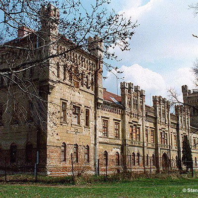

Slovensko
Bratislava
Počet obyvateľov: 422 932
Rozloha: 367 km²
Kraj: Bratislavský
Prvá pís. zmienka: 907
Galanta
Počet obyvateľov: 15 021
Rozloha: 33,91 km²
Kraj: Trnavský kraj
Prvá pís. zmienka: 1237

Banská Štiavnica
Počet obyvateľov: 10 210
Rozloha: 46,74 km²
Kraj: Banskobystrický kraj
Prvá pís. zmienka: 1156
Trenčín
Počet obyvateľov: 55 698
Rozloha: 82 km²
Kraj: Trenčiansky kraj
Prvá pís. zmienka: 1111